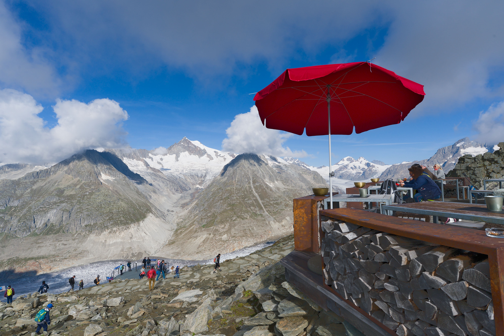
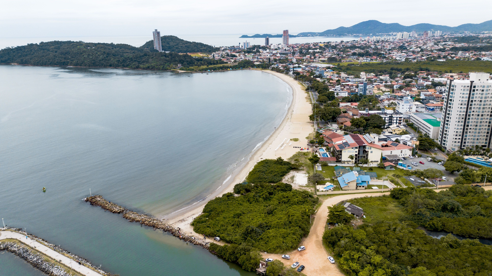

Praias Paradisíacas
Conheça algumas das praias mais bonitas do mundo e planeje sua próxima aventura à beira-mar.
Descubra destinos incríveis e planeje sua próxima aventura.
Conheça Nossos RoteirosDescubra destinos incríveis, roteiros personalizados e dicas para tornar suas viagens inesquecíveis.
Conheça algumas das praias mais bonitas do mundo e planeje sua próxima aventura à beira-mar.
Explore trilhas, montanhas e experiências radicais para quem busca emoção durante as viagens.
Descubra cidades históricas, museus e patrimônios culturais espalhados pelo mundo.


